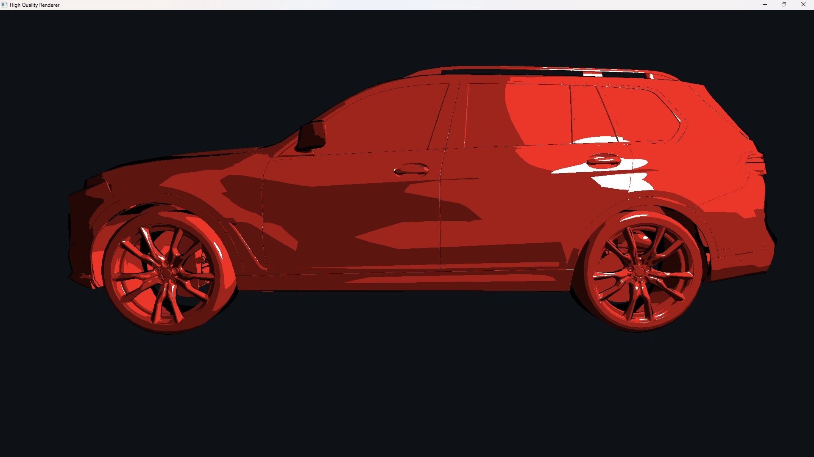
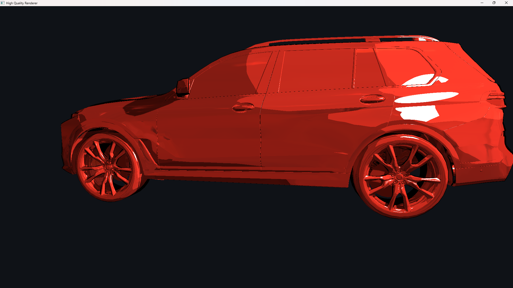
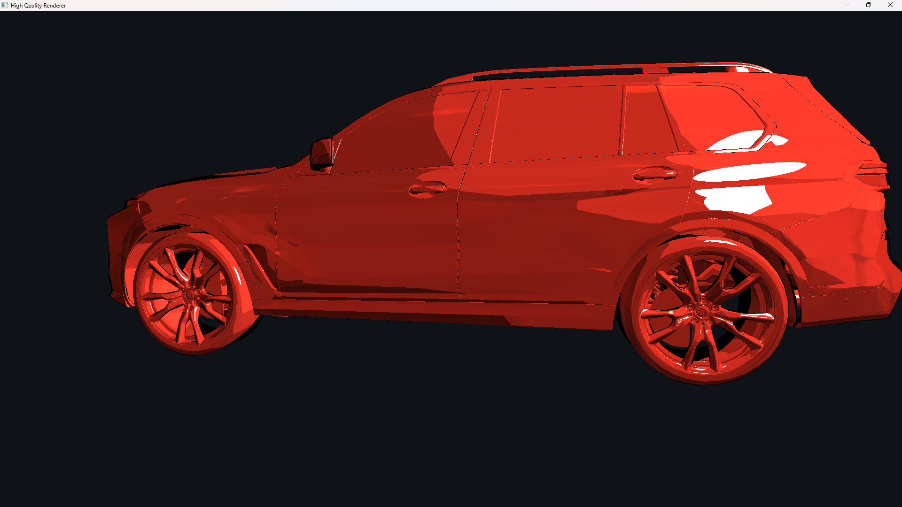
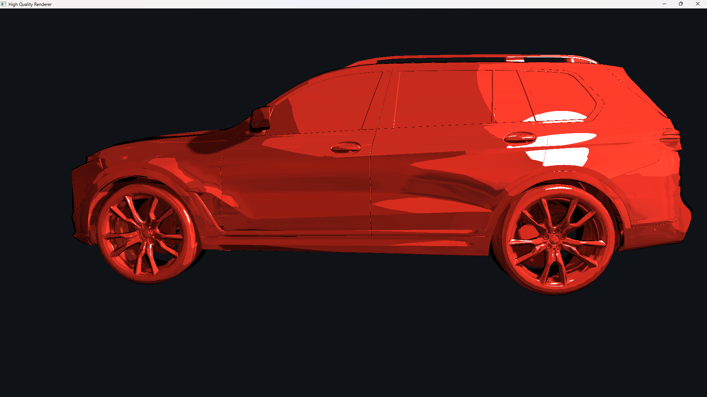

The fixed-function OpenGL pipeline is replaced entirely with programmable GLSL vertex and fragment shaders. The vertex shader transforms each vertex into world space, computes the correct world-space normal via the transpose-inverse normal matrix, and emits the light-space position needed for shadow mapping, all passed to the fragment stage through an interface block. No fixed-function lighting or texturing is used anywhere in the pipeline.
As the non-standard shading effect, a toon/cel shading model is implemented in the fragment shader. Rather than evaluating a continuous reflectance model, the diffuse term quantizes the Lambertian N·L value into four discrete brightness bands (full lit, mid-light, mid-shadow, deep shadow), producing the flat regions of color characteristic of cel animation. The specular highlight applies a hard binary threshold on the half-vector term instead of a smooth GGX or Phong lobe, giving a crisp, cartoon-style highlight. A specular size parameter maps to a shininess exponent in the range [4, 128], where larger values produce a tighter highlight. A rim-light term is computed from one minus N·V, raised to a power and thresholded tints the silhouette edges with the surface albedo color, scaled by a controllable rim intensity, reinforcing the stylized look. Fragments whose N·V falls below a threshold are shaded solid black, tracing a silhouette outline in screen space without any additional geometry pass.

Toon/cel shading: quantized diffuse bands, binary specular highlight, rim lighting, and N·V silhouette outline on a vehicle mesh.
Shadow mapping is implemented as a two-pass algorithm. In the first pass, the scene is
rendered from the point light's perspective using a perspective frustum, and only depth
values are written to a GL_DEPTH_COMPONENT texture attached to a dedicated
framebuffer object. Front-face culling is enabled during this pass to reduce self-shadowing
artifacts on back faces.
In the main shading pass, each fragment's world-space position is transformed into the light's clip space using the same light-space matrix. After the perspective divide, the resulting depth is compared against the value stored in the shadow map. A normal-dependent depth bias is clamped to a minimum of 25% of the base bias value and scaled upward by one minus N·L for surfaces at shallow angles to the light, which is subtracted before the comparison to prevent shadow acne. Fragments outside the light's frustum are treated as fully lit.
Percentage-closer filtering (PCF) is applied by sampling a (2r+1)*(2r+1) kernel of shadow map texels around the projected coordinate and averaging the per-texel binary comparisons, following the technique introduced by Reeves, Salesin, and Cook (SIGGRAPH 87). The radius r is adjustable at runtime (0 to 4, giving kernels from 1*1 up to 9*9), so the effective softness of shadow edges can be tuned interactively to approximate the penumbra of a finite-area light.

Shadow mapping enabled
Shadow mapping disabled (fully lit)
Soft shadow edges with PCF (radius = 4, 9x9 kernel)Having established GLSL programmable shaders with toon/cel shading and shadow mapping with PCF, the remaining work will focus on completing the core requirements and polishing the pipeline. The most immediate priority will be completing environment mapping. Beyond the core requirements, four add-ons will be completed and documented: Screen-Space Ambient Occlusion (SSAO), which darkens creases and contact regions using a G-buffer deferred geometry pass, a 64-sample hemisphere kernel, and a blur pass to smooth the occlusion signal; HDR Bloom with Reinhard tone mapping, which extracts bright regions into a separate framebuffer, applies a Gaussian blur, and additively composites the result before gamma correction; a Disney Metal BRDF, implementing anisotropic GTR2 distribution with Smith masking-shadowing and Schlick Fresnel with albedo-tinted F0, blended against the base specular lobe via a metallic strength parameter; and a Disney Clearcoat lobe, adding an independent varnish layer using the GTR1 distribution with fixed roughness and a gloss parameter controlling sharpness. The final deliverable will include a video demo showcasing all effects together.